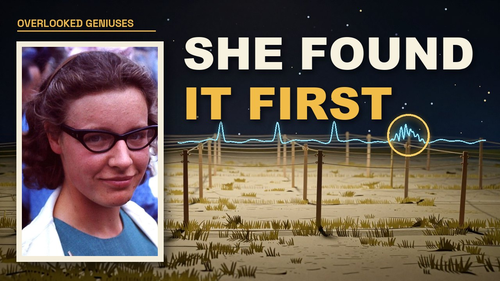

Episode 2
Astrophysics · 1967
15 Verified Sources
She Found a New Kind of Star. The Nobel Went to Her Supervisor.
In the autumn of 1967, twenty-four-year-old graduate student Jocelyn Bell spotted “a bit of scruff” on miles of hand-read chart paper and uncovered the first pulsar. Seven years later, the 1974 Nobel Prize in Physics went to her supervisor, Antony Hewish, and to Martin Ryle. Her name was never spoken at the ceremony.
0:00Cold open
0:45Cookery & needlework
2:19A field of wires
3:57Little green men
6:12A new kind of star
7:16Seven years later
Verified Academic & Archival Bibliography — Dame Jocelyn Bell Burnell
- S. Jocelyn Bell Burnell, “Little Green Men, White Dwarfs or Pulsars?”, Annals of the New York Academy of Sciences Vol. 302 (1977) — Transcript
- A. Hewish, S. J. Bell, J. D. H. Pilkington, P. F. Scott & R. A. Collins, “Observation of a Rapidly Pulsating Radio Source”, Nature 217, 709 (1968) — Nature
- NobelPrize.org — 1974 Nobel Prize in Physics Summary & Award Ceremony Speech
- Royal Astronomical Society (2018) — Special Breakthrough Prize
- Royal Society (2018 & 2021) — Breakthrough Prize & Copley Medal
- NPR Weekend Edition (Sep 2018) — Interview Transcript
- NASA (2017) — 50 Years After Pulsars & NASA Goddard StarChild
- Mansfield College, University of Oxford — Alumni Profile
- Encyclopaedia Britannica — Jocelyn Bell Burnell
- Cherenkov Telescope Array Observatory (CTAO) — Building from Diversity
- National Schools’ Observatory — Biography & Women in World History
Archival Portrait Credit: Roger W Haworth, 15 June 1967, CC BY-SA 2.0, via Wikimedia Commons. Cropped, colour-toned, and framed as a strictly rigid layer. Verbatim 1977 & 2018 quotes in the film are read by an AI voice and labelled on screen wherever heard.